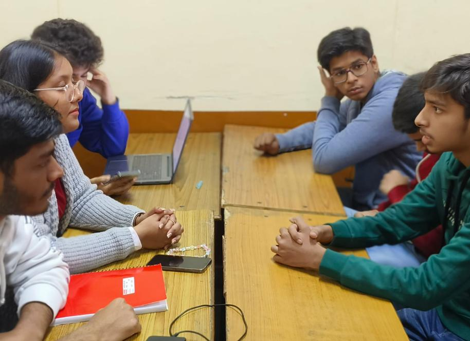
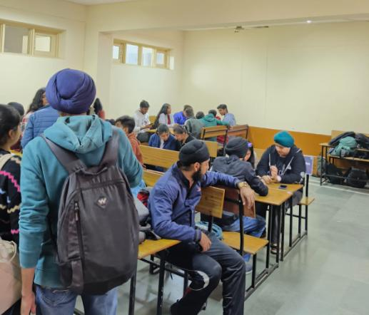
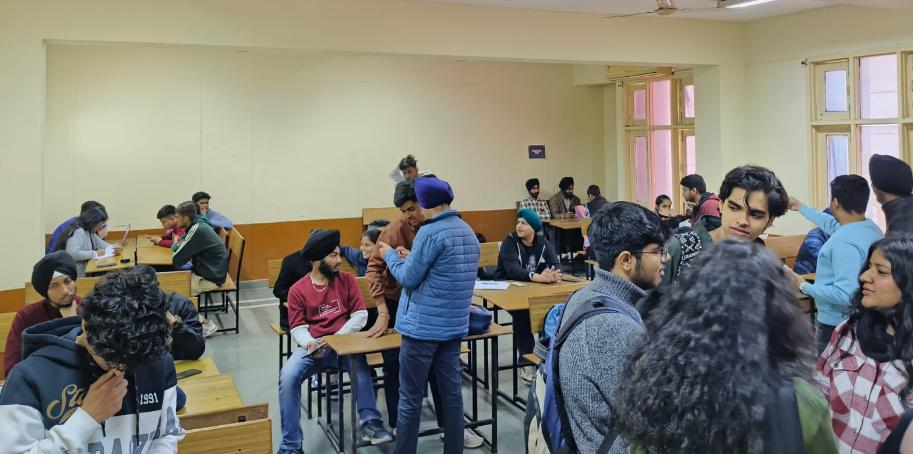
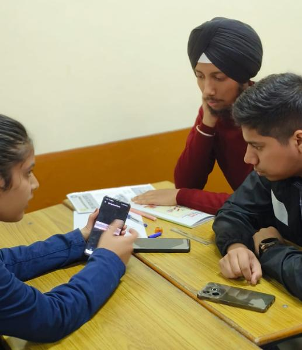
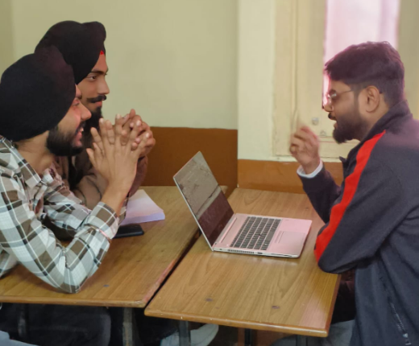
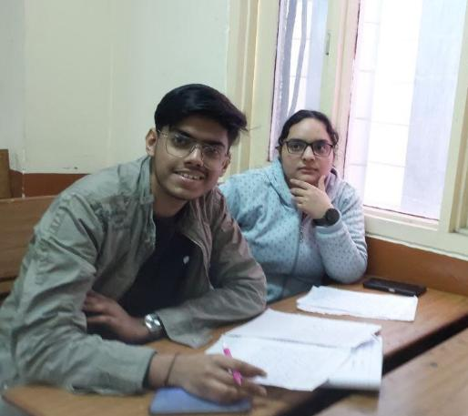

Quantum Quorum Society Auditions
About Event
Event Overview
On 29th January 2025, Quantum Quorum, the Physics Society of GTBIT, conducted its first-ever society auditions. Held in Room 11 of the Lecture Block at 11:00 AM, the event was open to all students with a passion for innovation, organization, and creativity.
Openings
- Social Media
- Event Management
- Outreach Team
- Content Team
- Project Team
- Graphic Design Team
Audition Rounds
- Round 1 - Domain Round: Conducted by domain heads, testing role-specific skills.
- Round 2 - HR/GD Round: Led by the Core Team, focusing on personality, team fit, and communication.
Interactive Zone
In addition to the interviews, participants engaged with our first-ever game SIMBAA, designed by the Project Team. Candidates also had the opportunity to browse through all published editions of our official newsletter, The Particle Posts, and provide valuable feedback.
Participant Stats
- 40+ students applied and participated in the auditions
- Students from all branches and years took part
- Domain Heads and Core Team facilitated a two-round selection process
- Interactive feedback collected for both SIMBAA and The Particle Posts
- Special thanks to Teacher-in-Charge Dr. Daljeet Kaur for her unwavering support
Event Image Gallery





